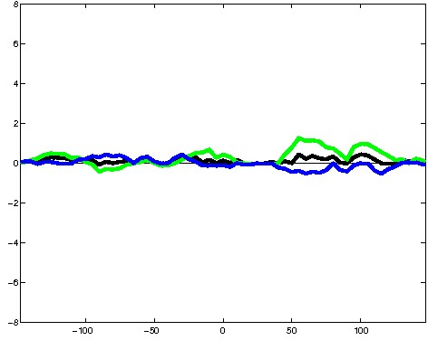
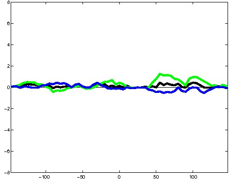
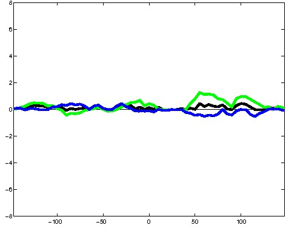

K562 Neither DNase matched - State 3:PromF (n=34)
K562 Neither DNase matched - State 3:PromF (n=34)
[
See group descriptions
]

; picked in K562 (state 3:PromF, DNase); matched; chr19:36,987,829-36,988,123 (295bp)")
; picked in K562 (state 3:PromF, DNase); matched; chr11:27,382,569-27,382,863 (295bp)")
; picked in K562 (state 3:PromF, DNase); matched; chr21:30,472,289-30,472,583 (295bp)")
; picked in K562 (state 3:PromF, DNase); matched; chr3:57,487,409-57,487,703 (295bp)")
; picked in K562 (state 3:PromF, DNase); matched; chr9:37,395,169-37,395,463 (295bp)")
; picked in K562 (state 3:PromF, DNase); matched; chrX:2,807,029-2,807,323 (295bp)")
; picked in K562 (state 3:PromF, DNase); matched; chr13:24,002,269-24,002,563 (295bp)")
; picked in K562 (state 3:PromF, DNase); matched; chr11:36,419,989-36,420,283 (295bp)")
; picked in K562 (state 3:PromF, DNase); matched; chr1:215,821,109-215,821,403 (295bp)")
; picked in K562 (state 3:PromF, DNase); matched; chr12:116,560,129-116,560,423 (295bp)") 

; picked in K562 (state 3:PromF, DNase); matched; chr6:104,861,709-104,862,003 (295bp)")
; picked in K562 (state 3:PromF, DNase); matched; chr5:125,902,909-125,903,203 (295bp)")
; picked in K562 (state 3:PromF, DNase); matched; chr5:111,706,849-111,707,143 (295bp)")
; picked in K562 (state 3:PromF, DNase); matched; chr10:28,957,609-28,957,903 (295bp)")
; picked in K562 (state 3:PromF, DNase); matched; chr6:144,905,349-144,905,643 (295bp)")
; picked in K562 (state 3:PromF, DNase); matched; chr17:33,373,969-33,374,263 (295bp)")
; picked in K562 (state 3:PromF, DNase); matched; chr12:25,204,869-25,205,163 (295bp)")
; picked in K562 (state 3:PromF, DNase); matched; chr3:93,653,629-93,653,923 (295bp)")